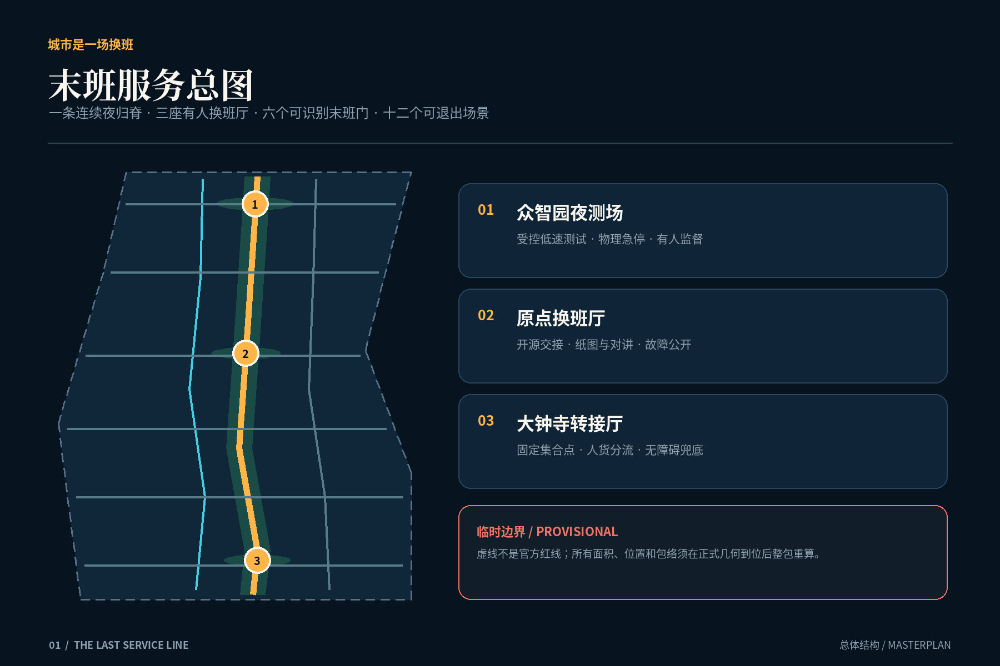
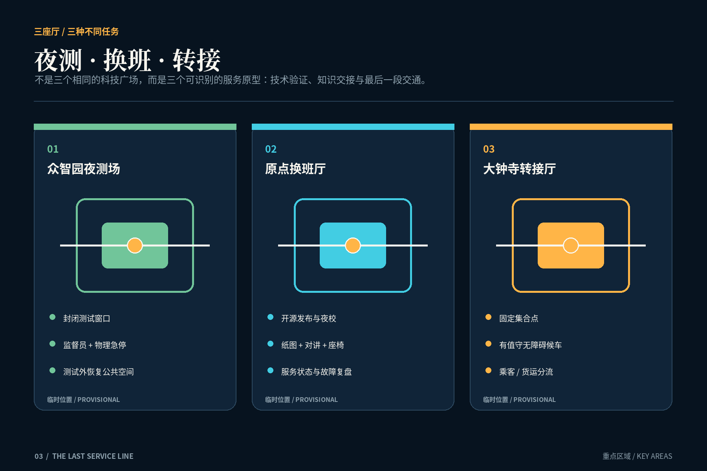
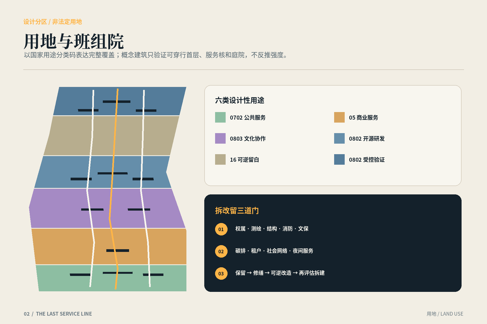
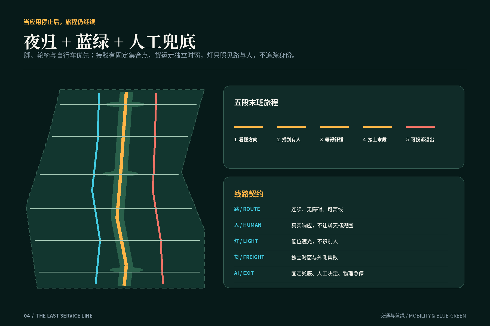
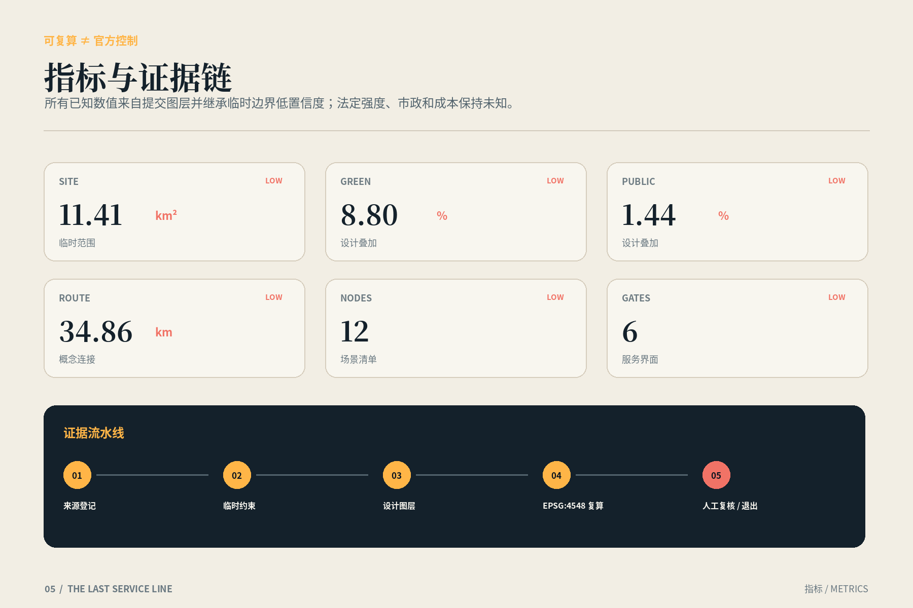

01 / 三层范围
总览地图
43.6平方公里研究协作、11.4平方公里总体网络和三处重点原型由同一份末班服务合同连接。范围为临时粗略几何。

02 / 用地分区 · 建筑
重点区域
01 NIGHT TEST YARD
受控测试、监督员、物理急停，测试外恢复公共空间。
02 SHIFT EXCHANGE
开源交接、纸图、对讲、座椅和故障复盘。
03 TRANSFER HALL
固定集合点、有人候车、无障碍与人货分流。


03 / 交通慢行 · 蓝绿公共空间
AI 场景
十二个节点覆盖离线导视、人工求助、休息卫生、固定接驳、货客分流、维修调度、低速夜测和故障复盘。每项AI都声明人工与退出路径。

04 / 更新项目
先服务，后建设
PHASE 01
六门、纸图、人工协议、临时值守核与资料核验。
PHASE 02
三厅一脊、无障碍、低位照明、蓝绿与人货分流。
PHASE 03
只有评估通过且正式数据确认后才扩展。
05 / 核心指标
核心指标
site_area_sqm11.41 km²
green_ratio8.80%
public_space_ratio1.44%
所有已知数值均为临时边界下的设计复算，低置信度；容积率、高度、道路红线、权属、市政和成本仍未知。

06 / 任务覆盖 · 自检状态
任务覆盖
公告17项任务与agent.1—agent.6均在合规矩阵中映射；九类空间图层、双语提案、五组图件、A3/A0与四道自检共同构成证据。
来源
公告、任务书、仓库资料与七个官方/公共案例；案例仅作方法比较。
假设
边界、控规、建筑、交通、市政、运营、数据与第三重点区位置均明确待确认。
自检状态
通过脚本只代表包的一致性，不代表规划、工程、运营或政府审批。